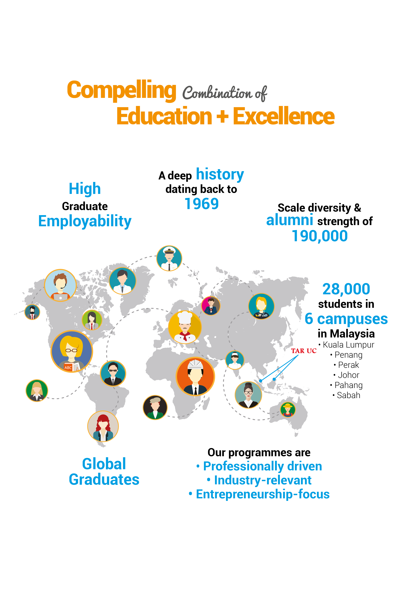
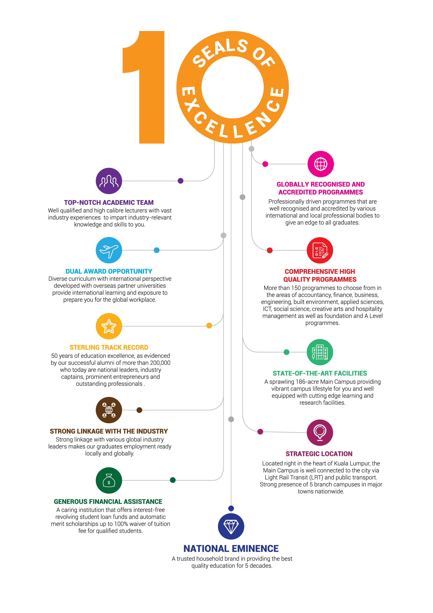
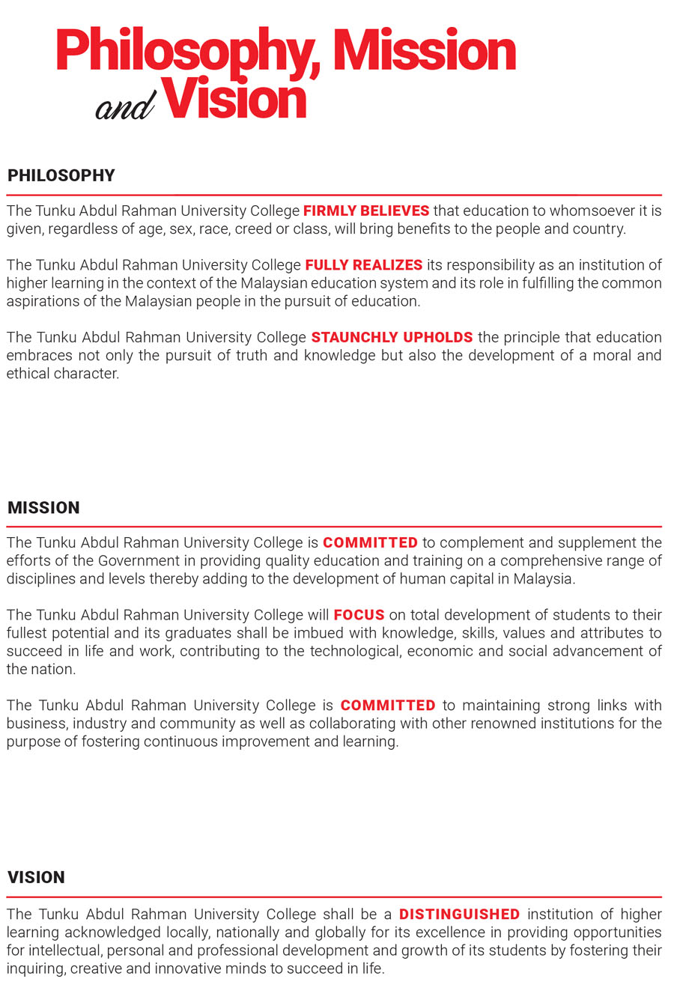

TAR UC In A Nutshell
-
Tunku Abdul Rahman University College (‘TAR UC’) was established in 1969 as TAR College
with the focus of providing tertiary education opportunities for young Malaysians regardless of race,
class and creed who were seeking quality education as well as meeting the rising demand for human
capital from businesses and industries. The College started with a single campus in Setapak,
Kuala Lumpur which is now the Main Campus. Subsequently, five branch campuses were established
in Penang, Perak, Johor, Pahang and Sabah.
TAR UC Main Campus in Kuala Lumpur sits on a piece of 186-acre land and the campus is an iconic landmark for its architectural feat in blending historical buildings with modern structures as well as the verdant greenery. Meanwhile, the branch campuses in Penang, Perak, Johor and Pahang are purpose-built complete with state-of-the-art infrastructure and facilities for learning and teaching. Moving forward, another new TAR UC purpose-built campus in Sabah is slated to be ready by 2019.
TAR UC offers programmes at pre-university, diploma, Bachelor’s degree and postgraduate levels that are widely recognised by the academia and industries for their depth and breadth of scope and academic rigor. Today, TAR UC has a student population of about 28,000 including international students from more than 20 countries enrolling in more than 120 programmes over a wide range of disciplines from foundation and A Level to accountancy, finance, business, economics, engineering, built environment, applied sciences, ICT as well as mass communication, creative arts, social science and hospitality management.
These programmes are conducted by 7 faculties and 1 centre namely Centre of Pre-University Studies, Faculty of Accountancy, Finance and Business, Faculty of Applied Sciences, Faculty of Computing and Information Technology, Faculty of Engineering and Technology, Faculty of Built Environment, Faculty of Communication and Creative Industries and Faculty of Social Science and Humanities. In addition, there is also Centre for Postgraduate Studies and Research that focuses on research.
TAR UC is one of the oldest institutions of higher learning in Malaysia with more than 190,000 students having passed through its doors.
The University College has won numerous scholastic awards and recognition with the most prestigious include being recognised as the Premier Digital Tech University by the Ministry of Higher Education and Malaysia Digital Economy Corporation (‘MDEC’) in 2017 and Asia Pacific CSR Awards 2016 where the University College won the Excellence in Education Improvement award.
Our Key Strength

10 Seals Of Excellence

Philosophy, Mission & Vision
